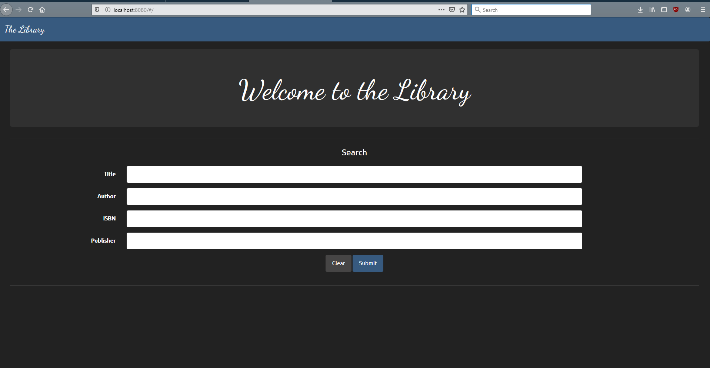
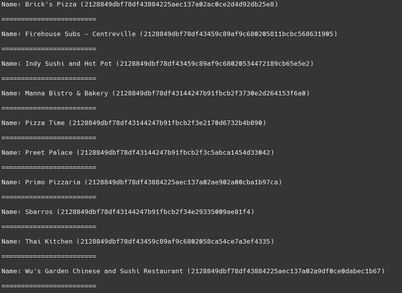
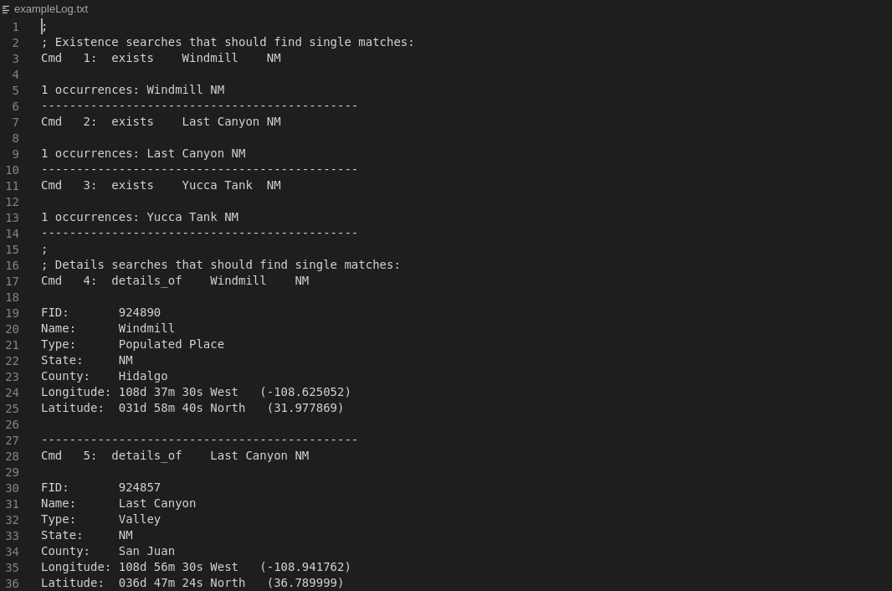

These projects are completed or under active development.

OpenLibrary API Portal Site
A small portal site I created to access the OpenLibrary API from a Raspberry PI.
The site allows searching the massive OpenLibrary book catalog for books to freely
read and download. I created the site to digitally expand my own small library and
give others access to a wide range of books.

EatStreet API Java Library
A small Java library I developed for my Cloud Software Development class. Features of the library include EatStreet account management,
searching nearby restaurants to order from, placing orders, viewing order histories, and saving addresses & cards to an account.

Small GIS System
Final GIS project written in C that I completed for my Computer Organization I class. The program reads in GIS index entries from a data
file and manipulates the entries using commands from a script file.
Due to my university's honor code policy I placed this project's code inside a private Github repository. Please contact me through LinkedIn
for access to this project's source code.